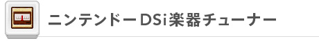
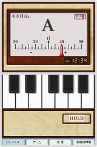
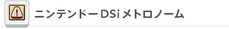
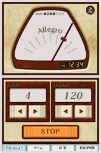
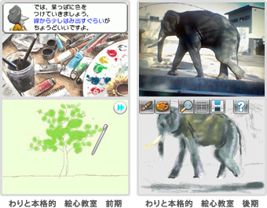

趣味で音楽や絵画をたしなんでいるという人にも、実用的なDSiウェアがあります。ここでは、DSiを楽器の音程を合わせるチューナーやメトロノームにしてしまうソフトや、キャンバスや絵筆を用意しなくても手軽に絵画のレッスンを受けられるソフトをご紹介します。


DSiで楽器のチューニング
楽器のチューニングが行えるソフトです。下画面の鍵盤にタッチすると音が鳴るので、その音程に合わせて楽器を調整したり、DSiのマイクに向かって楽器の音を鳴らすと、上画面表示されたＡ〜Ｇの音名とメーターが動くので、このメーターの針が合わせたい音程の目盛りに合うように調整したりすることも可能です。
なお、表示するチューナーの画面は、標準のアナログ文字盤以外に、デジタル表示、ゲーム＆ウオッチを模したデザインの3種類から選んで変更することができます。また、風船に書かれた音を楽器でマイクに向かって鳴らすと風船がわれるミニゲーム『TUNER FIGHT』も収録されています。楽器が正しくチューニングされているほど高得点を目指せるので、楽しみながら音感を鍛えることができるでしょう。
©2009 Nintendo Co-Developed by INTELLIGENT SYSTEMS


メトロノームを完全再現
楽器演奏の際にテンポ（速度）を合わせるメトロノームの機能をDSi上で実現させるソフトです。
下画面でテンポを設定すれば、実際のメトロノームと同じように、上画面に左右に揺れる振り子がリズムを刻み、音でチクタクと鳴る弱音でテンポをお知らせしてくれます。「Allegro」や「Moderato」などの演奏記号も、設定したテンポに合わせたものが表示されます。
もちろん、0〜7までのビート（拍子）の数ごとにベルの音（強音）を鳴らす設定ができるのも、従来のメトロノームと同じです。また、1拍の間を2〜4連符の弱音で刻む設定も可能です。
『ニンテンドーDSi楽器チューナー』と同様に、デジタル表示、ゲーム＆ウオッチ風などのデザイン変更が行えるのはDSiならでは。弱音と強音をドンキーコングの声に切り替えたり、自分でDSiのマイクに吹き込んだ音に変更することもできるので、オリジナルのリズム楽器として楽しむことも可能です。
さらに、マイクで拾った手拍子などの音に合わせてマリオを操作し、ドンキーコングが転がすタルを避けるミニゲーム『DONKEY METRONOME』も収録しています。体を動かしながら、楽しくリズム感を養いましょう。
©2009 Nintendo Co-Developed by INTELLIGENT SYSTEMS


実用的な絵画テクニックを体験学習
実際に描いてみるレッスンを通して、絵の描き方を体験学習できるソフトです。
特徴的なのは、レッスンにキャンバスも絵筆も不要なこと。絵はタッチペンを使ってDSiの画面上に描くことになりますが、実際に使う鉛筆や絵筆の感覚が再現されていて「わりと本格的」なものです。上画面に表示される描き方のお手本やレッスンの内容を見ながら下画面で絵を描いていけば、自然とうまく絵を描く方法を学べるはずです。
ソフトは「前期」と「後期」の2本にわかれています。前期は、鉛筆で丸を描くところからスタート。色の塗り方やさまざまなモチーフの描き方などの基礎を学べます。後期は、色の混ぜ方からはじまって、より高度な絵画の表現に使えるテクニックを練習しながら覚えることができます。
また「前期」と「後期」ともに、学んだことを踏まえて自由に絵を描く「フリーペイント」の機能を搭載しています。DSiのカメラで撮影した写真を上画面に表示して、レッスンを思い出しながら下画面に絵を描いていきます。
レッスンやフリーペイントで描いた絵は、DSiカメラのアルバムに好きな額縁を選んで保存することができます。空いた時間をこっそり絵の勉強に使って、上達した絵をお友達に見せて驚かせたり、といった使い方もできます。
©2009 Nintendo